Huffman Coding
This online help explains the functioning of the Huffman Coding plug-in.
Contents overview:
1) The tab Compression/Decompression and scenario selection
2) The tab Huffman tree
3) The tab Code table
4) The meaning of the icons in the menu bar
5) References
The Huffman Coding plug-in could be started by the menu Visualization
or via the Crypto Explorer tab Visualization.
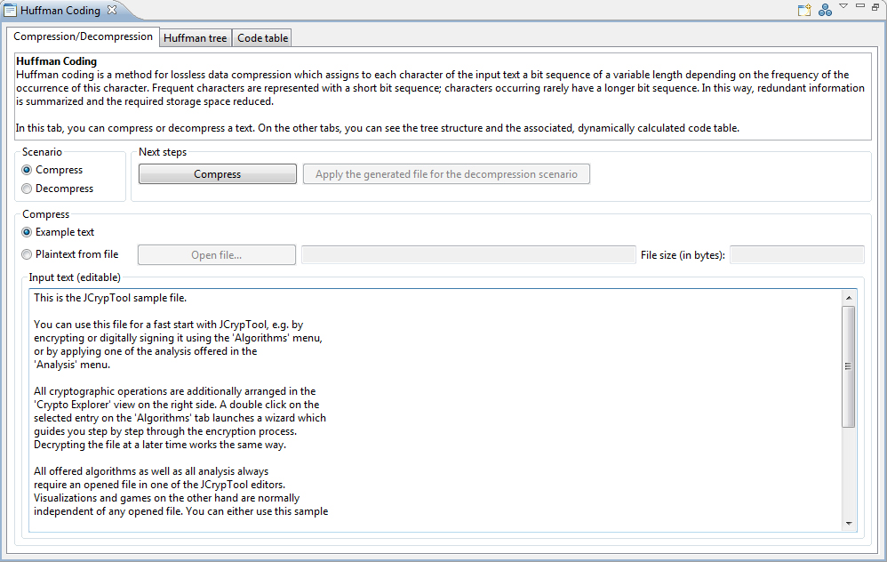
This plug-in contains three tabs: Compression/Decompression, Huffman tree
and Code table.
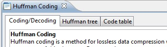
1) On the first tab Compression/Decompression there are two scenarios to choose:
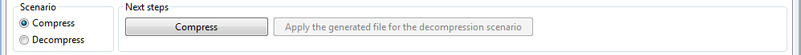
Scenario 1 -- Compress
This scenario applies the compression of text. You can load a text file or enter a text into
the field Input text.
a) To load a text file click on the button Open uncompressed file.... A file chooser dialog
of the operating system is opened and filtered by text files
(ISO-8859-1). ISO-8859-1 is a eight bit character encoding standard.
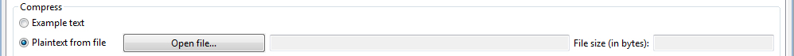
After choosing the file the content of the file is loaded into the field Input text and the button
Compress is enabled. The file size is determined and is displayed near to the text File size (in bytes).
You can use it to compare the file sizes before and after compression.
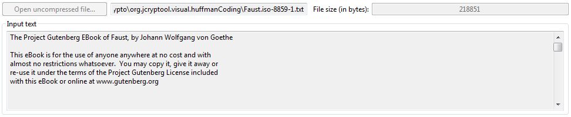
b) You can also compress a manually entered text. To do so just enter the text into the field Input text.
Once the text is entered the button Open uncompressed file... is disabled.
So you can choose between the manually entered text and loading a text file. To return to the initial
state just clear the text that you previously entered. This enables the button
Open uncompressed file... again.
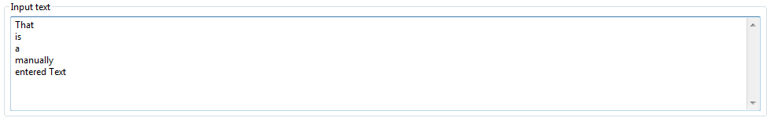
Click on the Compress button to compress the text shown in the field Input text.
After the compression is completed, a message is displayed about the compression.
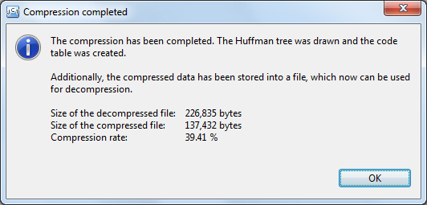
An output file with the file extension
.huffman is generated in the user's home directory. The file path and the size of the output file
are displayed. The button Compress is disabled and the button Uncompress enabled.
Now you can click on the button Apply file for uncompression to change the view to the
scenario 2 Uncompress and to uncompress the previously compressed text.
Scenario 2 -- Uncompress
In this scenario you can uncompress a compressed file. To perform that you have to click the button
Open compressed file... to open a file chooser dialog of the operating system. In this dialog files with the extension .huffman are filtered.
After you choose a .huffman file the file size is determined and displayed near the text
file size (in bytes). The button Uncompress is enabled.
A click on the button Uncompress will uncompress the file and displays its content in the field
Output text.
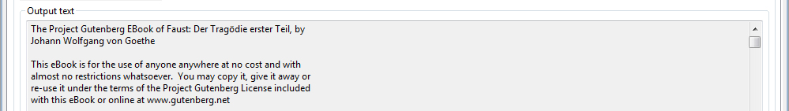
2) Depending on whether a compression or uncompression is performed, the Huffman tree structure will be displayed on the second tab.
For the graphical structure of the Huffman tree, the ZEST framework was used. ZEST is a visualization toolkit with a set of visualization components built for Eclipse.
With ZEST it is possible to visualize trees in an easy way.
The Huffman tree is a binary tree, which
transmits the information to its leafs. The leafs are green marked and present the ASCII characters of the input text.
On the edges of the graph the bits 1 or 0 are displayed which generate the code words for each character.
On the root and the inner nodes of the tree, which was produced by compression, the probabilities of the characters are displayed. On
a tree which was generated by uncompressing, the root and the inner nodes are displayed as empty nodes because in this
case no probabilities are calculated.
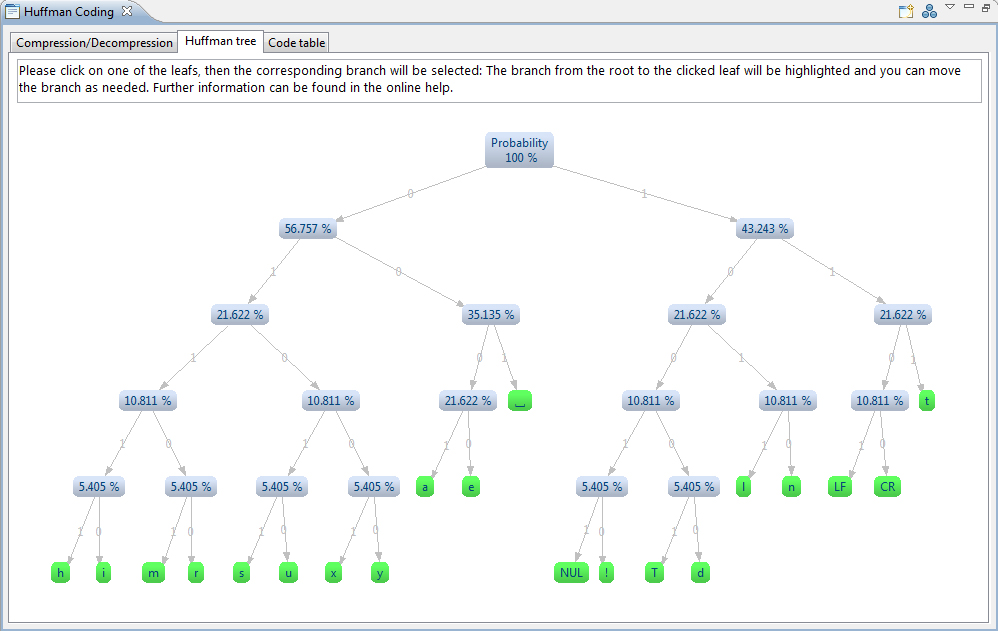
When you move with the mouse over a leaf, a tooltip shows the code word of the input character.
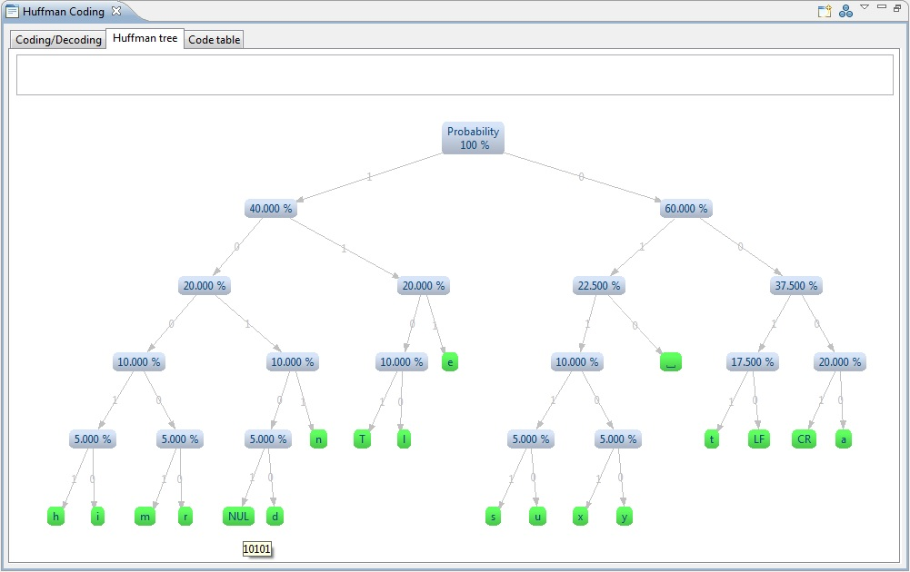
When you click on one of the leafs the corresponding branch will be selected: The branch from the root to the clicked leaf will be highlighted and you can move the branch as needed. The code word of
the selected leaf is displayed at the top.
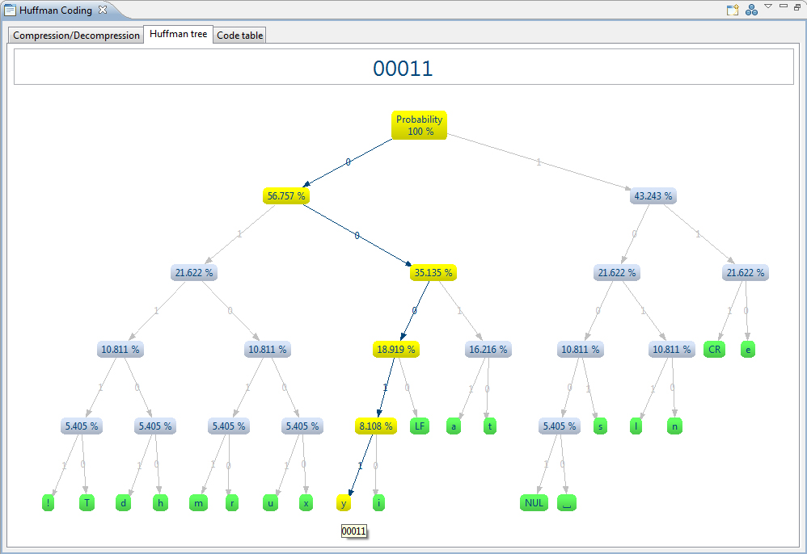
3) On the third tab the code table is displayed. For each ASCII character which appears in the
input text, its associated code word is displayed. By clicking on the button
Show branch the view switches to the tab Huffman tree and selects the corresponding branch.
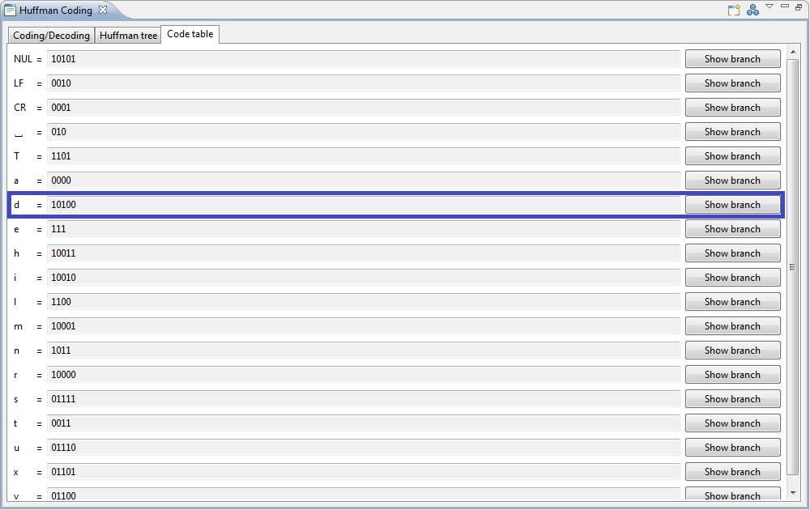
4) The meaning of the icons in the menu bar
- In the menu bar you can click on the icon to return to the initial state of the plug-in
and start the algorithm with new user input.
- You can change the layout of the tree by clicking on the
 icon in the menu bar. The
layout of Huffman tree changes dynamically. Per default, the Huffman tree is shown in tree layout. There are also the
layouts horizontal tree layout and radial layout available. Different displaying options of the Huffman tree are
offered to simplify the readability of the tree.
icon in the menu bar. The
layout of Huffman tree changes dynamically. Per default, the Huffman tree is shown in tree layout. There are also the
layouts horizontal tree layout and radial layout available. Different displaying options of the Huffman tree are
offered to simplify the readability of the tree.
- The size of the Huffman tree is directly adapted to the size of the view by creation, so that the tree is completely shown.
The view can also be zoomed by clicking on the icon.
5) References
- The Eclipse Visualization Toolkit ZEST
- Wikipedia link Huffman Coding
- Wikipedia link ISO-8859-1